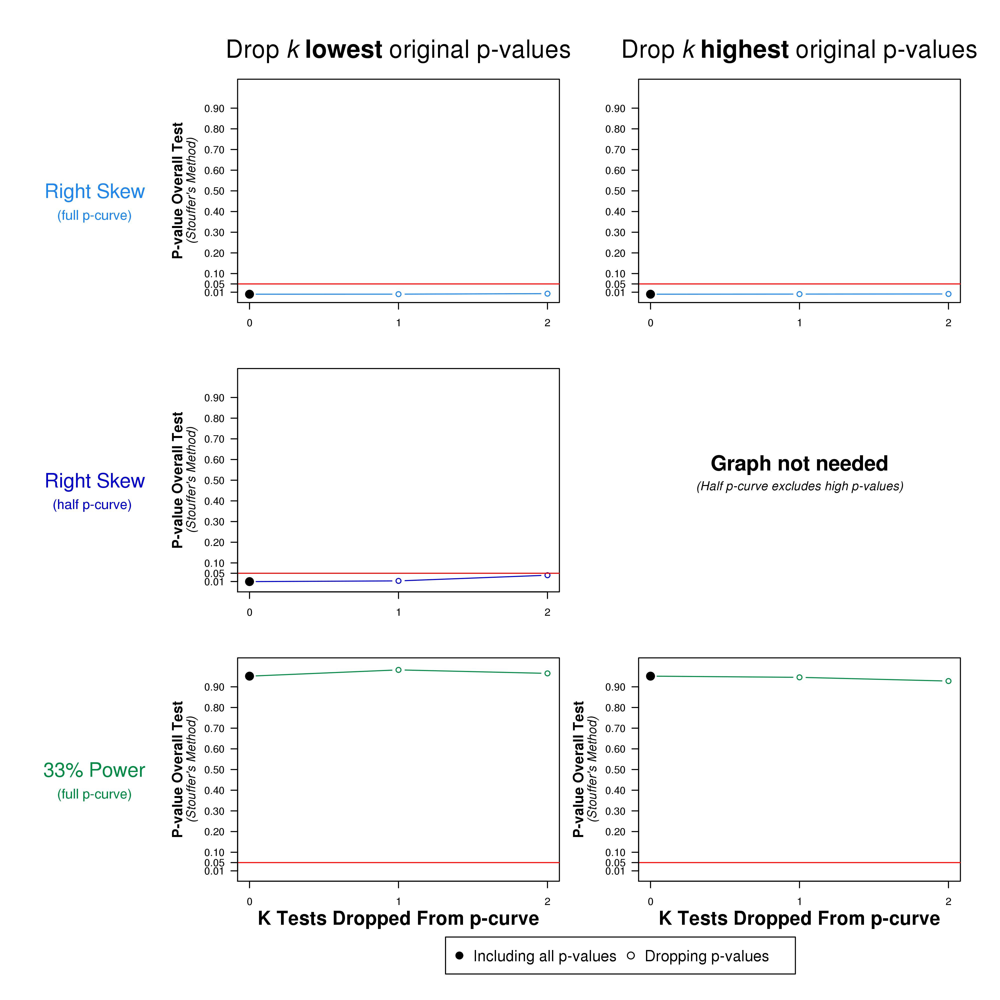

Interpretation:
P-Curve analysis combines the half and full p-curve to make inferences about evidential value. In particular, if the half p-curve test is right-skewed with p<.05 or both the half and full test are right-skewed with p<.1, then p-curve analysis indicates the presence of evidential value. This combination test, introduced in Simonsohn, Simmons and Nelson (2015 .pdf)
'Better P-Curves' paper is much more robust to ambitious p-hacking than the simple full p-curve test is.
Here both conditions are met, indicating evidential value.
Similarly, p-curve analysis indicates that evidential value is inadequate or absent, if the 33% power test is p<.05 for the full p-curve or both the half p-curve and binomial 33% power test are p<.1. Here neither condition is met; so p-curve does not indicate evidential value is inadequate nor absent.
As with all p-values, these cutoffs are just benchmarks, the lower the p-values are, the less consistent the data are with the respective null hypotheses. A p=.049 is essentially the same as a p=.051, while a p=.0001 is much more compelling than either.
To appreciate the advantage of these combination tests in relation to the previously used full p-curve tests, see Figure 2 and pages 1149-1151 in the 'Better P-Curves' paper (.pdf) and check out its Supplement 2 (.pdf)
Brief Explanations of Main Results:
1) Binomial tests compare the observed proportion of significant results that are p<.025 (in this case: 100%) to the expected proportions
when there is no effect (50%), and when studies have 1/3 power (77%). This latter number varies (by a few %s)
as a function of the degrees of freedom of the tests submitted to p-curve.
2) Continuous tests are obtained by computing pp-values for each test (probability of at least as extreme a p-value conditional on p<.05), and converting them to Z scores(N(0,1))
The sum of these Z scores (24
in this case), divided by the square-root of the number of tests included (again: 24
in this case)
is the reported Z score in that column (and corresponding p-value). This approach is known as Stouffer's Method (read gray text below for more information).
Note that the binomial and continuous tests are by definition one-sided (e.g., more right skewed than flat). We use negative Z values to indicate
deviation in the direction of the alternative hypothesis of interest; for example a negative Z value for the Right-Skew test is evidence against the flat null, and thus in
favor of Right-Skew.
3) Statistical power is obtained by comparing the expected p-curve for each possible value of power between 5% and 99% to the observed p-curve, and selecting
the level of power that leads to the expected p-curve that most closely resembles the observed p-curve. (We quantify the similarity
with the overall p-value arising from aggregating the resulting pp-values, pp-values which depend on the assumed level of power). The best fit possible is p=.5.
Dropping Highest/Lowest p-values
(Cumulative meta-analysis)
In order to assess the extent to which p-curve's overall results hinge on a few studies, the figure below reports them
excluding a progressively larger number of the most extreme p-values originally included in p-curve.
The first column of charts, reports results that first exclude the smallest p-value in p-curve, then the second smallest, and so on.
For example, if p-curve contained the following four p-values: p=.001, p=.004, p=.01 and p=.045, the 1st marker would report results with all four p-values,
the next marker when one excludes p=.001, then excluding both p=.001 and p=.004, and so on.
In the second column one proceeds in opposite order. First excluding p=.045, then p=.045 and p=.01, and so on.
The graph plots what happens until there is only half the p-value left, but in most situations one is only interested on what happens as the
single or handful of most extreme p-values are excluded.
We should place more confidence in sets of studies whose overall evidential value survives the
exclusion of the most extreme few results.

| Test entered by user |
p-value | pp-values | Z Scores | ||||||
|---|---|---|---|---|---|---|---|---|---|
| Full p-curve | Half p-curve | Full p-curve | Half p-curve | ||||||
| Righ Skew | Power of 33% | Righ Skew | Power of 33% | Righ Skew | Power of 33% | Righ Skew | Power of 33% | ||
| t(58)=0.218662761855477 | .82768 | NA | NA | NA | NA | NA | NA | NA | NA |
| t(113)=2.46622073868661 | .01516 | .30313 | .45327 | .60627 | .23046 | -0.52 | -0.12 | 0.27 | -0.74 |
| t(146)=0.604908907991458 | .54618 | NA | NA | NA | NA | NA | NA | NA | NA |
| t(38)=0.948006293710145 | .34912 | NA | NA | NA | NA | NA | NA | NA | NA |
| t(98)=1.34470884863463 | .18182 | NA | NA | NA | NA | NA | NA | NA | NA |
| t(86)=3.41990404052053 | .00096 | .01920 | .89326 | .03840 | .84951 | -2.07 | 1.24 | -1.77 | 1.03 |
| t(97)=0.740750634289215 | .46063 | NA | NA | NA | NA | NA | NA | NA | NA |
| t(69)=3.22577612141463 | .00192 | .03844 | .83732 | .07687 | .77026 | -1.77 | 0.98 | -1.43 | 0.74 |
| t(196)=1.44971049400171 | .14874 | NA | NA | NA | NA | NA | NA | NA | NA |
| t(95)=0.949918504748555 | .34456 | NA | NA | NA | NA | NA | NA | NA | NA |
| t(20)=1.13895509239912 | .26818 | NA | NA | NA | NA | NA | NA | NA | NA |
| t(28)=1.04082888321733 | .30686 | NA | NA | NA | NA | NA | NA | NA | NA |
| t(121)=0.754166274409636 | .45221 | NA | NA | NA | NA | NA | NA | NA | NA |
| t(22)=2.86296935885334 | .00904 | .18081 | .61417 | .36163 | .44498 | -0.91 | 0.29 | -0.35 | -0.14 |
| t(43)=1.24826042570721 | .21869 | NA | NA | NA | NA | NA | NA | NA | NA |
| t(22)=0.992410743525336 | .33179 | NA | NA | NA | NA | NA | NA | NA | NA |
| t(69)=2.9295693591706 | .00460 | .09195 | .72394 | .18390 | .61014 | -1.33 | 0.59 | -0.90 | 0.28 |
| t(118)=0.228168707063145 | .81991 | NA | NA | NA | NA | NA | NA | NA | NA |
| t(7)=2.15708716858835 | .06790 | NA | NA | NA | NA | NA | NA | NA | NA |
| t(40)=0.189188791323423 | .85090 | NA | NA | NA | NA | NA | NA | NA | NA |
| t(54)=0.933345662321546 | .35480 | NA | NA | NA | NA | NA | NA | NA | NA |
| t(28)=0.0957918899364275 | .92437 | NA | NA | NA | NA | NA | NA | NA | NA |
| t(85)=3.27898695419711 | .00151 | .03022 | .85814 | .06043 | .79998 | -1.88 | 1.07 | -1.55 | 0.84 |
| t(69)=0.204170946770707 | .83882 | NA | NA | NA | NA | NA | NA | NA | NA |
| SUM of Z-Scores in column, dividing by sqrt(N of tests) Z Scores reported under p-curve figure above-----> |
-3.46 | 1.66 | -2.34 | 0.82 | |||||
Explaining these calculations with an example:
Take the first significant result entered: t(113)=2.46622073868661.
It is associated with a two-sided p-value of 0.01516.
pp-values are the probability of at last as extreme a significant p-value. For right skew we compute these under the null
of no effect; because p-values would be distributed uniform between 0 and .05, we simply divide by .05 (multiply by 20) and get the pp-value for right skew,
that is 0.01516*20=0.30313. One minus that gives us the pp-value for left skew (not shown above).
For the pp-value under the null that the test is powered to 33% things are a bit more complicated. This explanation will not be quite enough, but:
we find the non-centrality parameter for the corresponding distribution and degrees of freedom that gives 33% power.
We then evaluate in that non-central distribution the observed test statistic, t(113)=2.46622073868661, and now divide by 33% rather than 5%
because now 1/3 of tests are expected to be p<.05 rather than only 5% of them.
More importantly, the interpretation of the pp-value for 33% power is
as follows. If the underlying effect size were big enough to give the sample of the study obtaining t(113)=2.46622073868661 33% power,
then with probability 0.45327 we would get a p-value of 0.01516 or higher.
For the half p-curve we proceed similarly. First, for right skew we divide by .025, multiply by 40. When a p-value is >.025 it is not included
in half p-curve, we see "NA" in the table above. For 33% power, in turn, we use the same non-centrality parameter but this time we divide by the share of
p-values expected to be p<.025 when power is 33%.
The last four columns report the Z-Scores associated with those pp-values. So for the full p-curve right-skew pp-value we had
pp=0.30313, evaluating the standard normal distribution in that percentile gives us the reported Z=-0.52.
Diagnostic plot for power estimation
This figure plots how consistent the observed p-curve is with each possible value of power between 5% and 99%.
To create the figure we compute pp-values for the null that all studies are powered with a given level of power and combine those pp-values
using Stouffer's method. The best fitting level of power will lead to an overall Stouffer Z=0, p=.5.
This approach is different from the one used with App 3.0 where instead the Kolmogorov-Smirnov test was run on the resulting distribution of pp-values and the uniform.
The results with both methods are very similar. The main advantage of the KS test approach is that it reports absolute fit between expected and observed p-curve.
The main advantage of the Stouffer method is that it is the approach used to compute the confidence interval and is hence more parsimonious.
The table with results at the top of this page reports 74% as the estimate of power. This means that if all studies in the set were truly powered to
74%, half the time we would see a flatter p-curve than the one we see, and half the time we would see a more right-skewed one. So 74% is our best guess.
Confidence interval for power
To build the confidence interval for power we proceed as we do to obtain the estimate of power,
but rather than finding the underlying statistical power that leads to an overall Stouffer test
combining the resulting pp-values of p=.5, we find the level of power that gives p=.05 and p=.95.
For example, above we saw that the lower end of the confidence interval for power was 34%, this means that if we assume that's the level of power
we would observe a p-curve this right-skewed, or more righ-skewed, as indexed by the Stouffer combination of the resulting pp-values, only 5% of the time.
The other end of the confidence interval (94%), in turn, means that if power were that high, we would see as flat a p-curve, or flatter,
95% of the time. Note that this is a 90% confidence interval (for a 95% one, we would look for levels of power leading to overall p-values of
2.5% and 97.5% respectively). We use 90% to make it consistent with the one-sided test against the 33% power null.
If p-curve is significantly flatter than expected with 33% power, then the (90%) confidence interval for power will not include 33% power.
Thank you for using the p-curve app.
{kind=link}
{kind=link}